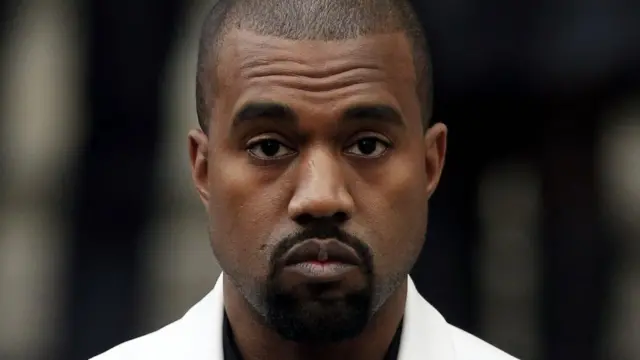
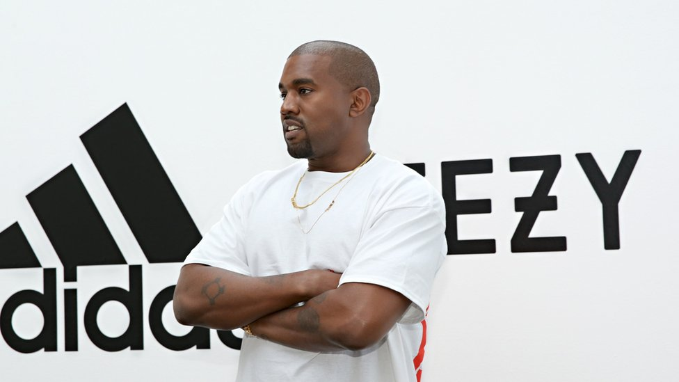
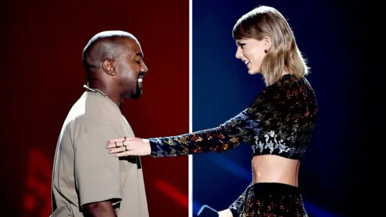
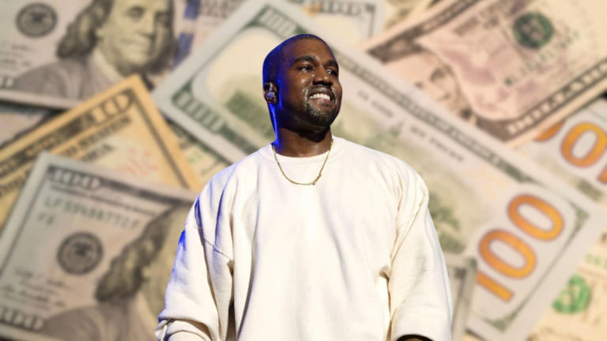

Biografía
Kanye West es un influyente rapero, productor y diseñador. Desde sus inicios, redefinió el panorama musical y cultural con cada álbum y proyecto que lanzó.

Actualidad
En la actualidad, Ye trabaja en su nuevo álbum “Cuck” y desarrolla una ciudad futurista llamada “DROAM”. También lidera Yeezy, DONDA y el dispositivo Stem Player.

Polémicas
ue tenía acuerdos multimillonarios.El impacto fue inmediato. Adidas, una de las compañías que tenía una lucrativa colaboración con Kanye a través de su línea de zapatillas Yeezy, anunció la terminación de su contrato, lo que representó la pérdida de cientos de millones de dólares tanto para la empresa como para el artista.
Choques entre Kanye y Taylor
La relación entre Kanye West y Taylor Swift ha estado marcada por una larga y compleja disputa que se remonta a los premios MTV Video Music Awards de 2009. Desde entonces, ha habido momentos de aparente reconciliación y nuevas oleadas de conflicto, a menudo centradas en letras de canciones y referencias en redes sociales. Cronología de la disputa: 2009: Kanye interrumpió el discurso de aceptación de Taylor en los MTV VMA, generando controversia. 2010: Kanye se disculpó, pero luego retractó su disculpa y acusó a Swift de usar el incidente para obtener publicidad, según la BBC. 2016: Kanye lanzó la canción "Famous", con la letra "Siento que Taylor y yo podríamos tener sexo / ¿Por qué? Yo hice famosa a esa zorra". 2016: Kim Kardashian, entonces esposa de Kanye, publicó un video en Snapchat que parecía mostrar a Swift aprobando la letra, lo que desencadenó una nueva ola de controversia y acusaciones de engaño por parte de Swift. 2025: Kanye ha vuelto a arremeter contra Taylor en redes sociales, acusándola de impedirle participar en el Super Bowl y reviviendo la disputa de 2009, según Infobae. En la actualidad: A pesar de algunos momentos de reconciliación, la relación entre ambos sigue siendo tensa. Kanye ha seguido mencionando a Taylor en sus canciones y en redes sociales, mientras que Taylor ha tomado medidas legales contra él por comentarios difamatorios y ofensivos, según Infobae.
Kanye y su trastorno
Kanye West, también conocido como Ye, ha hablado públicamente sobre su salud mental, revelando que ha sido diagnosticado con trastorno bipolar y, más recientemente, que cree que fue un diagnóstico erróneo, y que en realidad es autista. El trastorno bipolar se caracteriza por cambios extremos en el estado de ánimo, incluyendo episodios de manía y depresión. West ha descrito el trastorno bipolar como un "superpoder" y ha hablado sobre cómo afecta su creatividad, pero también ha reconocido que puede ser problemático. Recientemente, en una entrevista, afirmó que su diagnóstico de bipolaridad fue un error y que en realidad es autista. El trastorno bipolar: Es un trastorno mental que causa cambios extremos en el estado de ánimo, que incluyen episodios de manía (estado de ánimo elevado, energía, impulsividad) y depresión. West ha hablado abiertamente sobre su experiencia con el trastorno bipolar, describiendo cómo afecta su creatividad y su vida diaria. Algunos profesionales de la salud mental han señalado que ciertos comportamientos de West, como los delirios de grandeza y la impulsividad, podrían ser indicativos de episodios maníacos. Kim Kardashian, la exesposa de West, ha pedido públicamente compasión y comprensión hacia él, reconociendo que sus palabras y acciones pueden ser influenciadas por su condición. El posible autismo: West ha declarado que su diagnóstico de trastorno bipolar fue incorrecto y que en realidad es autista. Esta afirmación ha generado controversia y debate, ya que el autismo y el trastorno bipolar son condiciones diferentes. Algunos han especulado que la confusión en el diagnóstico podría deberse a la superposición de algunos síntomas entre ambas condiciones. West ha expresado su deseo de que los centros médicos cambien la forma en que tratan a las personas con condiciones de salud mental.Kanye: ¿Cual es su patrimonio?
Kanye West, uno de los artistas más influyentes y conocidos en el mundo de la música y la moda, ha tenido una trayectoria financiera que ha experimentado altibajos a lo largo de los años. En su punto más alto, Kanye llegó a tener un patrimonio estimado en aproximadamente 2 mil millones de dólares, consolidando su lugar como uno de los empresarios y artistas más ricos del mundo. Gran parte de su fortuna proviene de su exitosa carrera musical, que incluye álbumes premiados y ventas millonarias, así como de su marca de ropa y calzado, Yeezy, que ha logrado un enorme éxito a nivel global y ha sido valorada en miles de millones. Sin embargo, en los últimos tiempos, su patrimonio ha sufrido una significativa disminución. Actualmente, las estimaciones indican que su patrimonio neto es de alrededor de 400 millones de dólares. Esta caída refleja una serie de factores, incluyendo problemas legales, controversias públicas y decisiones comerciales que han impactado en su valoración económica. Aunque sigue siendo una suma considerable y uno de los artistas más ricos, la diferencia con su pico máximo es notable, y muestra cómo las circunstancias y decisiones empresariales pueden afectar la riqueza personal de figuras públicas de tan alto perfil. Es importante también mencionar que, aunque Kanye West ha visto disminuir su patrimonio, sigue siendo un empresario con una influencia significativa en la moda y la cultura popular, y continúa invirtiendo en distintos proyectos y emprendimientos. En la actualidad, su capital lo mantiene como una figura muy influyente, aunque no en el nivel de la riqueza que alcanzó en su apogeo.